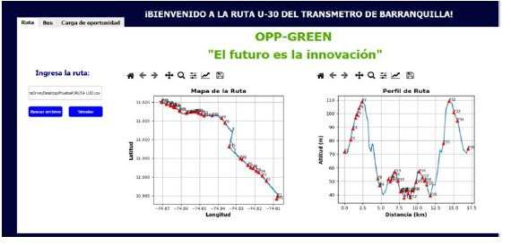
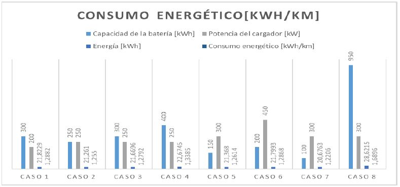

Opportunity Charging Systems for Electric buses
Oppcharge.org
The recharge-by-opportunity system consists of batteries that are charged several times during operation, generally at times when passengers are expected to board the bus at the stations; the recharging system is executed by means of a pantograph anchored to a pole, which minimizes the required number of said element, thereby reducing the overall cost to load the equipment.
The main objective of this project is to implement a computer application in Python to analyze the energy consumption of electric buses and study the location of opportunity charging stations along a specific route. In order to achieve this, the battery recharging and energy consumption of a fleet of electric buses on a given route had to be characterized. And at the same time, develop a graphical interface for the visualization of geographical data of the route, the charging stations and the parameterization of the standard-type buses.
At the end, the final objective was focused on integrating the models of energy consumption and battery recharging to a graphical interface that allows to visualize the results of the simulations. All these objectives were drawn with the purpose of once the model has been verified, to be able to draw a route and to be able to study the performance of the recharge system by opportunity through different scenarios and thus, to be able to define if there is an appropriate one for the case study.
If you want to know more about this project, you can watch this little video that gives a good overview of what this project was about.